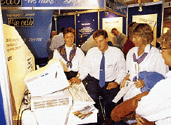

Datamaskiner, utstyr og programvare
På Kontor og Data'96 ønsker vi å vise norsk næringsliv hva som er tilgjengelig og hva som er mulig med datateknologi. Moderne teknologi åpner nye muligheter og leder i norske bedrifter kommer til Kontor og Data for å orientere seg i et stort marked og om hvilke muligheter som finnes. Sørg for at ditt firma er der for å bistå søkende og nyhets hungrige besøkende. Det sier seg selv at en bred messe hvor de besøkende har muligheten til Å få den store oversikten er den mest effektive måten å orientere seg i et stort marked. VI fortsetter på vår målsetning med å lage en enda bedre data-representasjon under Kontor og Data'96, og vil med dette invitere alle som har noe å tilby markedet innenfor bl.a.:

Programvare * Teknisk databehandling * Nettverk/kommunikasjon * Multimedia/grafikk/Virtual Reality * Maskinvare/tilleggsutstyr * Datasikkerhet * Periferiutstyr * Kompetanse/opplæring * Desktop Publishing
Basis for all databehandling er systemvaren og vi setter fokus på:
Windows'95 * Windows NT * DOS * Macintosh * OS/2 * UNIX m.fl
Schibsted Nett
Last modified: Thu Jan 4 09:39:20 1996